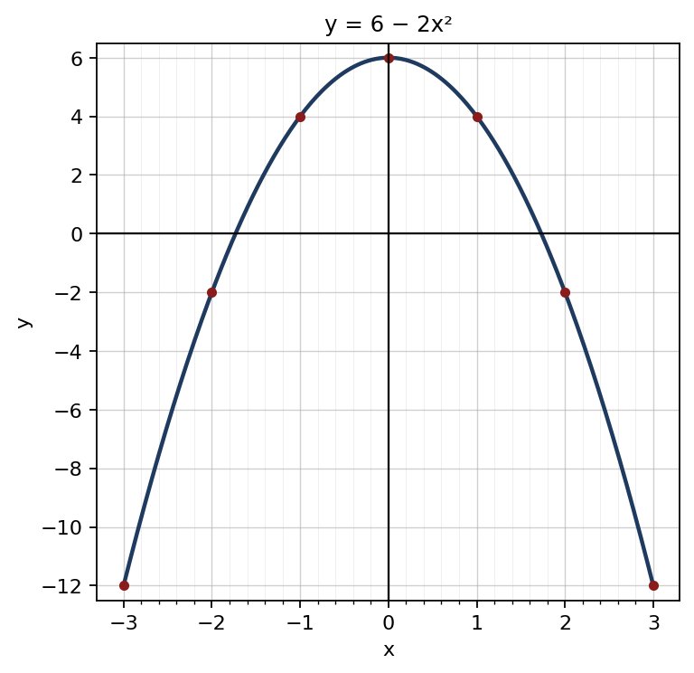
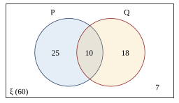

1. √3249: 32 → 52 = 25, ශේෂය 7 ; 749 → 107 × 7 = 749, ශේෂය 0
අවසාන පිළිතුර: 57
(ලකුණු 2)2. 53 × 65 = 2 ; 154 − 2 = 74
අවසාන පිළිතුර: 74 = 134
(ලකුණු 2)3. (3x)2 + 2(3x)(2y) + (2y)2
අවසාන පිළිතුර: 9x2 + 12xy + 4y2
(ලකුණු 2)4. 2x2 + 10x − 3x − 15 = 2x(x + 5) − 3(x + 5)
අවසාන පිළිතුර: (2x − 3)(x + 5)
(ලකුණු 2)5. සංගුණකවල කු.පො.ගු. = 24 ; x3, y2
අවසාන පිළිතුර: 24x3y2
(ලකුණු 2)6. aa − b − ba − b = a − ba − b
අවසාන පිළිතුර: 1
(ලකුණු 2)7. θ360 × 227 × 7 × 7 = 38.5 ⇒ θ360 × 154 = 38.5 ⇒ θ360 = 14
අවසාන පිළිතුර: 90°
(ලකුණු 2)8. බාහිර කෝණය = Â + B̂ ⇒ 3x = 117 ⇒ x = 39 ; B̂ = 2 × 39
අවසාන පිළිතුර: 78°
(ලකුණු 2)9. log5 53 − log2 2−3 = 3 − (−3)
අවසාන පිළිතුර: 6
(ලකුණු 2)10. lg 4 + lg 52 = lg (4 × 25) = lg 100
අවසාන පිළිතුර: 2
(ලකුණු 2)11. a + 4d = 17 ; a + 9d = 32 ⇒ 5d = 15
අවසාන පිළිතුර: d = 3
(ලකුණු 2)12. A = {1, 2, 3, 4, 6, 12} ⇒ n(A) = 6 ; n(A′) = 12 − 6
අවසාන පිළිතුර: 6
(ලකුණු 2)13. අලාභය = 4 800 × 15100 = 720 ; 4 800 − 720
අවසාන පිළිතුර: රු. 4 080
(ලකුණු 2)14. පොම්ප පැය = 8 × 9 = 72 ; 72 ÷ 6
අවසාන පිළිතුර: පැය 12
(ලකුණු 2)15. r2 = Aπ
අවසාන පිළිතුර: r = √Aπ
(ලකුණු 2)16. 3x − 3 > 2x + 4 ⇒ x > 7
අවසාන පිළිතුර: 8
(ලකුණු 2)17. 27 × 36054
අවසාන පිළිතුර: 180
(ලකුණු 2)18. අනුකූල ප්රතිඵල {5, 6} ; 26
අවසාන පිළිතුර: 13
(ලකුණු 2)19. ක්ෂේත්රඵලය = පාදය × ලම්බ උස ⇒ 48 = 8 × h
අවසාන පිළිතුර: 6 cm
(ලකුණු 2)20. 360 = 9 × 8 × h ⇒ 72h = 360
අවසාන පිළිතුර: 5 cm
(ලකුණු 2)| (a) | |
| ① × 2: 4x − 2y = 14 | 1 |
| ② සමඟ එකතු කිරීම: 7x = 35 | 1 |
| x = 5 | 1 |
| ආදේශයෙන්: 10 − y = 7 ⇒ y = 3 | 1 |
| (b) | |
| (x + 6)(x − 4) = 0 | 1 |
| x = 4 හෝ x = −6 | 1 |
| (c) | |
| (i) x + x2 = 42 ⇒ x2 + x − 42 = 0 | 1 |
| (ii) (x + 7)(x − 6) = 0 | 1 |
| x = 6 හෝ x = −7 | 1 |
| (iii) x = 6 ⇒ 2(6) − 1 = 11 | 1 |
මුළු ලකුණු: 10
| (a) | |
| x = −1 ⇒ y = 4 ; x = 3 ⇒ y = −12 | 1 |
| (b) | |
| නිවැරදි පරිමාණය සහ අක්ෂ | 1 |
| ලක්ෂ්ය 7 නිවැරදිව ලකුණු කිරීම | 1 |
| සුමට වක්රය | 1 |
 | |
| (c) | |
| (i) උපරිම අගය 6 ; හැරුම් ලක්ෂ්යය (0, 6) | 1 |
| (ii) වක්රය x අක්ෂය ඡේදනය වන ලක්ෂ්ය කියවීම | 1 |
| x ≈ −1.7 හෝ x ≈ 1.7 (±1.7 – ±1.8 පිළිගන්න) | 1 |
| (iii) −1.7 ≤ x ≤ 1.7 | 1 |
| (iv) y ≈ −6.5 (−6.3 – −6.7 පිළිගන්න) | 1 |
| (d) | |
| y = −2x2 | 1 |
මුළු ලකුණු: 10
| (a) | |
| පරිමාව = π(R2 − r2)h = 227 × (49 − 12.25) × 20 | 1 |
| = 227 × 36.75 × 20 | 1 |
| = 2 310 cm³ | 1 |
| (b) | |
| 2πRh = 2 × 227 × 7 × 20 | 1 |
| = 880 cm² | 1 |
| (c) | |
| 2 310 × 8 = 18 480 g | 1 |
| = 18.48 kg | 1 |
| (d) | |
| ජල පරිමාව = 227 × 3.5 × 3.5 × 20 = 770 cm³ | 1 |
| = ලීටර් 0.77 | 1 |
| 7.7 ÷ 0.77 = නළ 10 | 1 |
මුළු ලකුණු: 10
| (a) | |
| A, B, C, E, F, O සහ සෘජු කෝණ නිවැරදිව දැක්වූ රූපය | 1 |
| (b) BFC හා CEB ත්රිකෝණවල, | |
| BF̂C = CÊB = 90° ; BC පොදු පාදය | 1 |
| FB̂C = EĈB (AB = AC නිසා සමද්විපාද ත්රිකෝණයේ පාද කෝණ) | 1 |
| ∴ ΔBFC ≡ ΔCEB (කෝ.කෝ.පා.) | 1 |
| (c) | |
| අංගසම ත්රිකෝණවල අනුරූප පාද ⇒ CF = BE | 1 |
| (d) | |
| අනුරූප කෝණ ⇒ FĈB = EB̂C, එනම් OĈB = OB̂C | 1 |
| OBC ත්රිකෝණය සමද්විපාද ⇒ OB = OC | 1 |
| (e) | |
| AB̂C = (180° − 50°) ÷ 2 = 65° ; ABE ත්රිකෝණයේ AB̂E = 90° − 50° = 40° | 1 |
| OB̂C = 65° − 40° = 25° = OĈB | 1 |
| BÔC = 180° − 50° = 130° | 1 |
මුළු ලකුණු: 10
| (a) | |
| 20 – 30 | 1 |
| (b) | |
| පන්ති මධ්ය: 5, 15, 25, 35, 45 | 1 |
| fx: 30, 135, 375, 420, 360 | 1 |
| Σfx = 1 320 | 1 |
| මධ්යන්ය = 1 320 ÷ 50 = මිනිත්තු 26.4 | 1 |
| (c) | |
| මිනිත්තු 20 ට අඩු = 6 + 9 = 15 | 1 |
| 1550 × 100 = 30% | 1 |
| (d) | |
| මුළු කාලයේ අඩුවීම = 8 × 10 = 80 | 1 |
| නව එකතුව = 1 320 − 80 = 1 240 | 1 |
| නව මධ්යන්ය = 1 240 ÷ 50 = මිනිත්තු 24.8 | 1 |
මුළු ලකුණු: 10
| (a) | |
 | |
| ξ සහ ඡේදනය වන වෘත්ත දෙක | 1 |
| ඡේදනයේ 10 ; P පමණක් 25, Q පමණක් 18 | 1 |
| පිටත 7 | 1 |
| (b) | |
| n(P ∪ Q) = 35 + 28 − 10 | 1 |
| = 53 | 1 |
| (c) | |
| 60 − 53 = 7 | 1 |
| (d) | |
| (i) එකක් පමණක් = 25 + 18 = 43 | 1 |
| P = 4360 | 1 |
| (ii) Q පමණක් = 28 − 10 = 18 | 1 |
| P = 1860 = 310 | 1 |
මුළු ලකුණු: 10